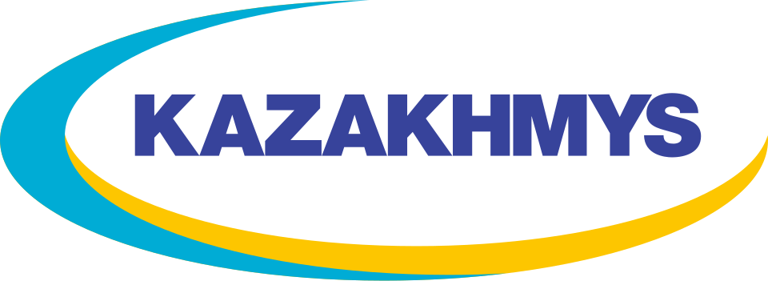

카작무스 Kazakhmys
카작무스(Kazakhmys)는 카자흐스탄의 채굴업과 비철금속 야금 부문에 핵심 자산이 집중된 수직 통합형 지주회사이다. 1992년에 공식 설립되었으며 구리 생산 부문에서 세계 순위에 올라 있다.
최종 업데이트

카작무스는 어떤 브랜드인가
카작무스는 카자흐스탄의 채굴업과 비철금속 야금에 핵심 자산이 집중된 수직 통합형 지주회사이다. 그룹은 광산 13곳, 선광 공장 6곳, 구리 제련소 2곳을 운영하고 발전소 3곳과 탄광 1곳도 보유한다.
구리 정광 생산량은 271,000톤으로 세계 20위이며, 조동과 음극동 생산량은 각각 377,000톤과 365,000톤으로 세계 12위이다. 2020년에는 카자흐스탄이 은 생산 세계 11위에 오르는 데 기여했고, 그룹은 카자흐스탄 내 발전량 3위를 기록했다.
최종 지배주주는 지분 70%를 가진 Vladimir Kim이다. 2014년 10월에는 Kazakhmys PLC가 비공개 법인과 상장사로 나뉘었다.
카작무스는 어떻게 시작되고 성장했나
이 지역의 채굴 활동은 20세기 초로 거슬러 올라간다. 1913년 영국인 사업가 Leslie Urquhart의 주도로 Spassky Joint Stock Company가 Zhezkazgan에 등록되었고, 이 회사는 10월 혁명 이후인 1920년대에 국유화되었다.
1931년 4월 산업 조직 Balkhashmet이 설립되었으며, 1938년 Balkhash에서 구리 제련이 시작되고 1943년 Zhezkazgan에서 BMZ 공장이 가동을 시작했다. 카작무스는 1992년 공식 설립되었고, 1997년 8월 주식회사로 등록되었다가 2005년 1월 14일 유한책임 파트너십으로 재등록되었다.
카작무스의 브랜드 아이덴티티는 무엇인가
광산, 선광, 제련에 발전과 탄광까지 한 그룹에 갖춘 수직 통합 구조가 특징인 카자흐스탄의 비철금속 지주회사이다.
카작무스의 대표 제품과 서비스는 무엇인가
그룹은 구리 정광과 조동, 음극동을 생산하는 구리 사업을 중심으로 한다. 광산 13곳(지하 10곳, 노천 3곳)과 선광 공장 6곳, 구리 제련소 2곳(Zhezkazgan과 Balkhash)을 운영하며, 제련소 중 한 곳은 재건 중이다.
발전 사업으로는 GRES Topar LLP, Zhezkazgan 화력발전소, Balkhash 화력발전소 3곳을 보유한다. Kazakhmys Coal LLP가 운영하는 탄광도 1곳 있다.
2020년 광석 채굴은 생산 계획의 100.76%를 달성했고, 광석의 평균 구리 함량은 1%였다.
카작무스는 지금 어떤 상태인가
그룹은 Vladimir Kim이 70% 지분으로 최종 지배하며, 나머지 30%는 Eduard Ogay가 보유한다. 사장은 Vladimir Kim이고 최고경영자는 Nurakhmet Nuriev이다.
2014년 10월 Kazakhmys PLC가 비공개 Kazakhmys Corporation LLP(Zhomart Mine 소유)와 상장사 KAZ Minerals Plc로 나뉘었으며, Vladimir Kim은 두 법인의 지배권을 유지했다.
카작무스 로고는 어떻게 변해왔나
자주 묻는 질문
카작무스는 언제 설립되었나요?
카작무스는 1992년 설립되었습니다.
카작무스는 어떤 산업의 브랜드인가요?
카작무스는 에너지·산업재 분야의 브랜드입니다.
카작무스의 브랜드 아이덴티티는 무엇인가요?
광산, 선광, 제련에 발전과 탄광까지 한 그룹에 갖춘 수직 통합 구조가 특징인 카자흐스탄의 비철금속 지주회사이다.
카작무스의 대표 제품은 무엇인가요?
그룹은 구리 정광과 조동, 음극동을 생산하는 구리 사업을 중심으로 한다.
카작무스는 현재 어떤 상태인가요?
그룹은 Vladimir Kim이 70% 지분으로 최종 지배하며, 나머지 30%는 Eduard Ogay가 보유한다.
카작무스의 본사는 어디에 있나요?
카작무스의 본사는 런던에 있습니다(위키데이터 기준).
카작무스의 공식 웹사이트는 어디인가요?
카작무스의 공식 웹사이트는 http://www.mykazakhmys.kz 입니다.
출처와 검증
카작무스 관련 참고: 공식 웹사이트 · 위키데이터 Q649715 · 한국어 위키백과 · 영어 위키백과. 브랜드명은 한글과 원어를 함께 표기하되 데이터에 없는 표기는 만들지 않습니다. 기원 국가·설립연도는 검수된 정의문에서 확인된 값을 우선하고, 없을 때만 공식 웹사이트 URL이 일치하는 위키데이터 개체의 값을 씁니다. 위키데이터 값은 2026-11-14 기준입니다.